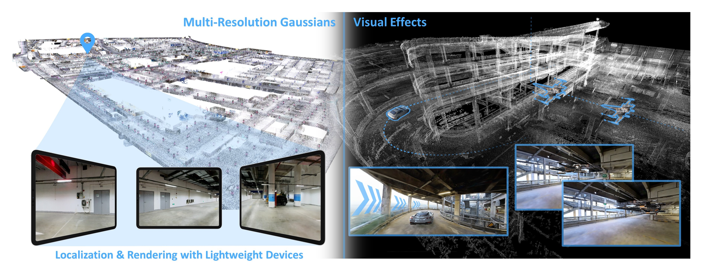
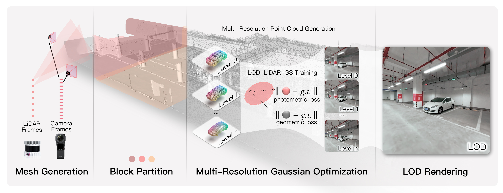
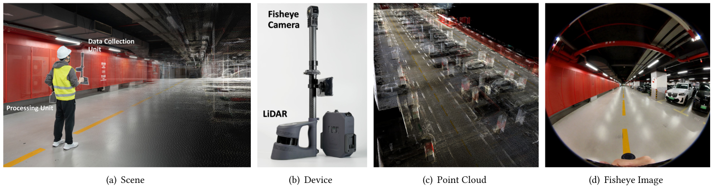
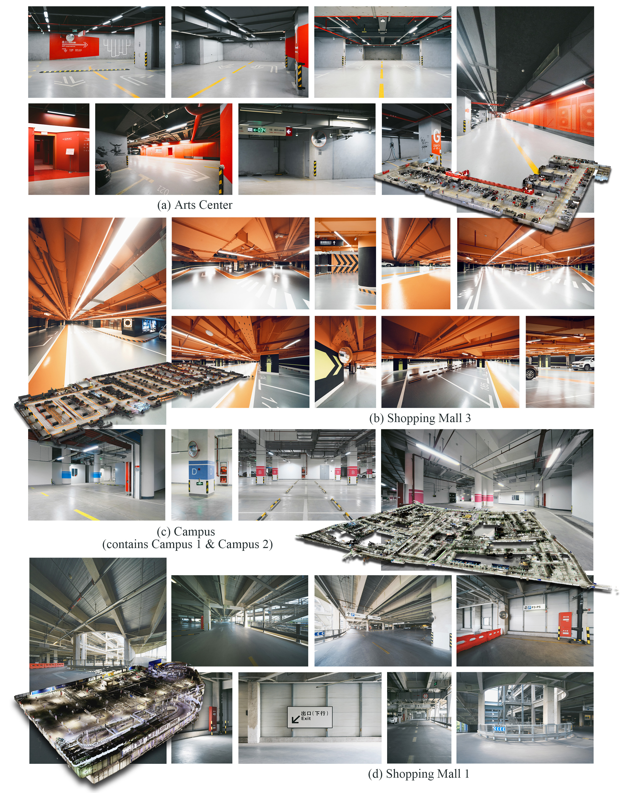
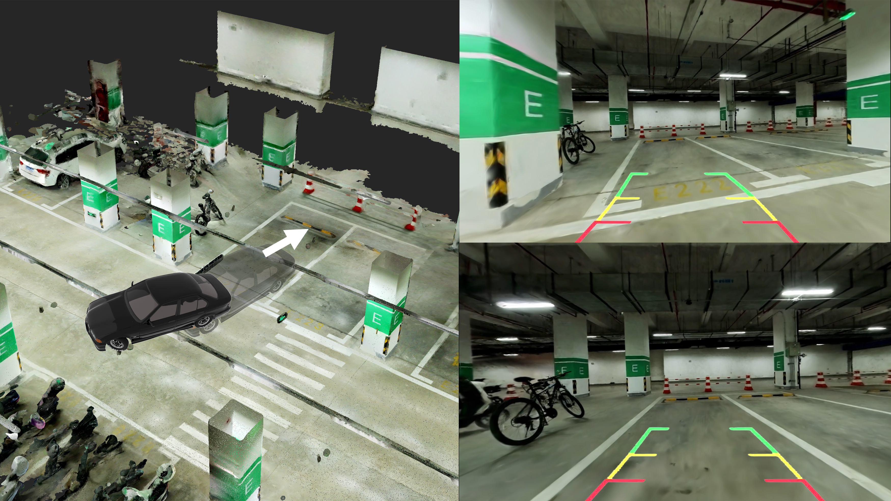
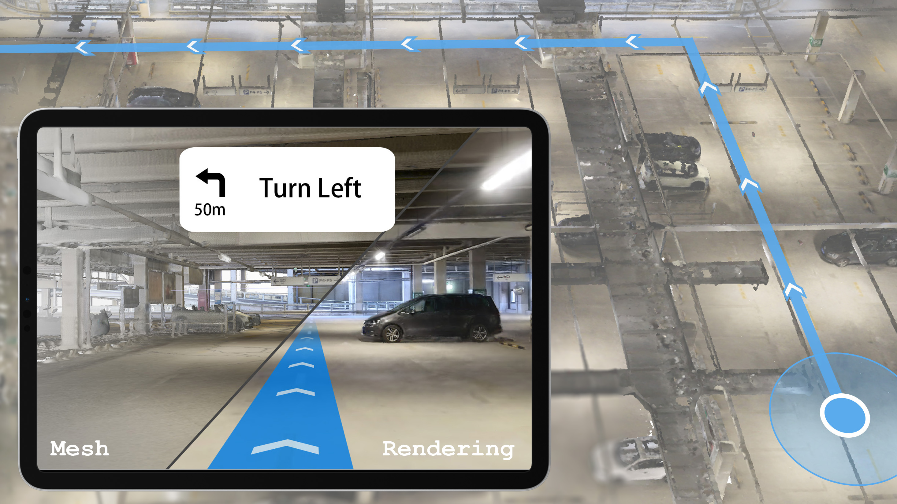
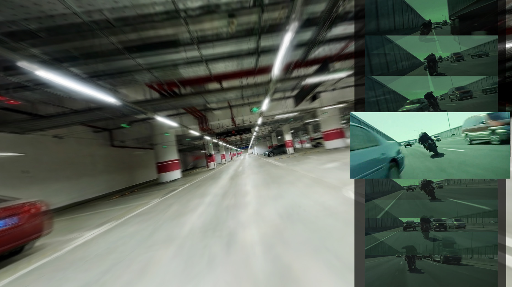

LetsGo: Large-Scale Garage Modeling and Rendering via LiDAR-Assisted Gaussian Primitives
SIGGRAPH Asia 2024
* equal contributions, † corresponding authors

We present LetsGo - an explicit and efficient end-to-end framework for high-fidelity rendering of large-scale garages. We design a handheld Polar scanner to capture RGBD data of expansive parking environments and have scanned a garage dataset, named GarageWorld, comprising eight garages with different structures. Our LiDAR-assisted Gaussian primitives approach along with GarageWorld dataset enables various applications, such as autonomous vehicle localization, navigation and parking, as well as VFX production.
Abstract
Large garages are ubiquitous yet intricate scenes that present unique challenges due to their monotonous colors, repetitive patterns, reflective surfaces, and transparent vehicle glass. Conventional Structure from Motion (SfM) methods for camera pose estimation and 3D reconstruction often fail in these environments due to poor correspondence construction. To address these challenges, we introduce LetsGo, a LiDAR-assisted Gaussian splatting framework for large-scale garage modeling and rendering. We develop a handheld scanner, Polar, equipped with IMU, LiDAR, and a fisheye camera, to facilitate accurate data acquisition. Using this Polar device, we present the GarageWorld dataset, consisting of eight expansive garage scenes with diverse geometric structures, which will be made publicly available for further research. Our approach demonstrates that LiDAR point clouds collected by the Polar device significantly enhance a suite of 3D Gaussian splatting algorithms for garage scene modeling and rendering. We introduce a novel depth regularizer that effectively eliminates floating artifacts in rendered images. Additionally, we propose a multi-resolution 3D Gaussian representation designed for Level-of-Detail (LOD) rendering. This includes adapted scaling factors for individual levels and a random-resolution-level training scheme to optimize the Gaussians across different resolutions. This representation enables efficient rendering of large-scale garage scenes on lightweight devices via a web-based renderer. Experimental results on our GarageWorld dataset, as well as on ScanNet++ and KITTI-360, demonstrate the superiority of our method in terms of rendering quality and resource efficiency.
Video
Method

Overview of our LiDAR-assisted Gaussian splatting framework. Initially, we generate a base mesh using color and depth data collected by our self-designed Polar device. The data is then partitioned into blocks for parallel and rapid processing. Next, we downsample the high-quality scanned point clouds into multi-resolution point cloud for our LOD-LiDAR-RGS (Sec.4.2) method initialization. In addition to photometric supervision, we apply our novel unbiased Gaussian depth regularizer (Sec.4.1) for geometric supervision. Finally, our system produces photorealistic LOD rendering results based on the optimized multi-resolution Gaussian representation.
LOD Real-time Viewer
Lightweight Web Viewer
GarageWorld Dataset
Self-designed Polar Scanner

Our compact Polar scanner (b) is engineered for capturing expansive garage environments (a). It is optimized for handheld operation or vehicular mounting, enabling versatile data capture in extensive spaces. At the core of Polar’s data acquisition unit lies a high-fidelity LiDAR sensor, capturing precise 3D point clouds (c), complemented by a fisheye camera that procures wide-angle 2D RGB images (d) for a complete scene modeling.
GarageWorld Dataset

Applications


Left: Autonomous vehicle parking. Our diverse garage scenes facilitate training algorithms for generating parking trajectories under different scenarios. When guiding the vehicle to the parking space, our garage model allows real-time and wide-FOV rendering of the environment, capturing drivable area and obstables, thereby enhancing safe parking capabilities. Right: Real-time localization & navigation in challenging garage environments. Our colored 3D model facilitates precise vehicle camera localization and optimal path navigation, particularly in low-light garage conditions, ensuring safe driving. The lightweight web-based rendering ensures deployability in vehicles with limited computing resources.

VFX demonstration. an analysis of the animation in the reference video, we extract the poses of several keyframes, which enable our system’s renderer to generate corresponding video segments. Our 3D garage modeling and rendering also enables motion blur rendering, producing realistic visual effects.
Citation
@article{10.1145/3687762,
author = {Cui, Jiadi and Cao, Junming and Zhao, Fuqiang and He, Zhipeng and Chen, Yifan and Zhong,
Yuhui and Xu, Lan and Shi, Yujiao and Zhang, Yingliang and Yu, Jingyi},
title = {LetsGo: Large-Scale Garage Modeling and Rendering via LiDAR-Assisted Gaussian Primitives},
year = {2024},
issue_date = {December 2024},
publisher = {Association for Computing Machinery},
address = {New York, NY, USA},
volume = {43},
number = {6},
issn = {0730-0301},
url = {https://doi.org/10.1145/3687762},
doi = {10.1145/3687762},
journal = {ACM Trans. Graph.},
month = nov,
articleno = {172},
numpages = {18},
keywords = {neural rendering, large-scale garage modeling, LiDAR scanning, 3D gaussian splatting,
garage dataset, level-of-detail rendering}
}